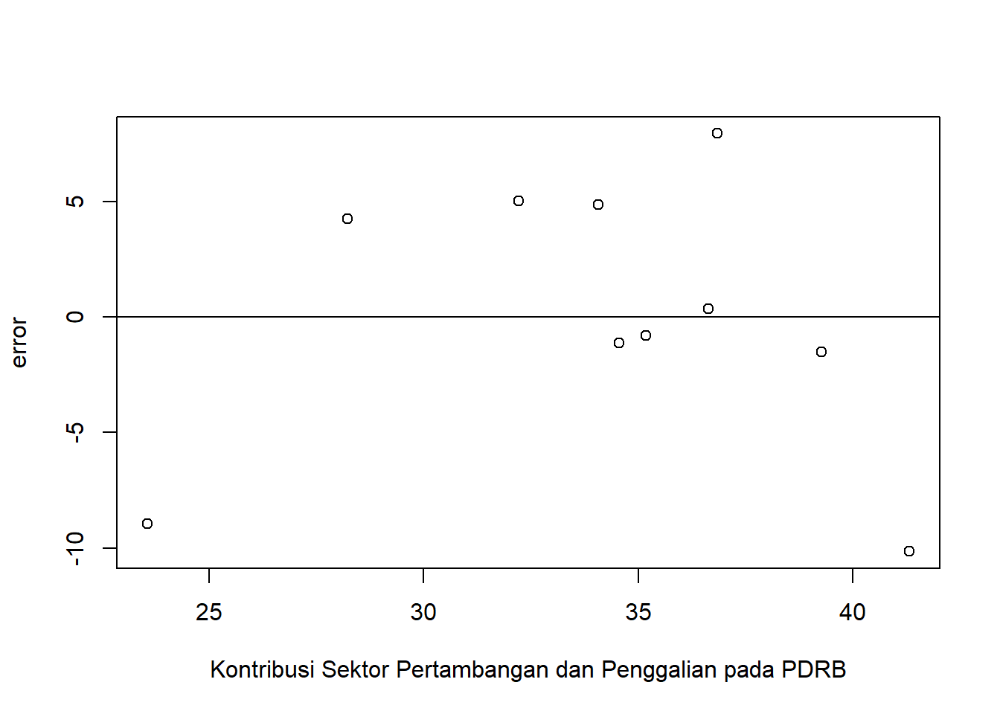
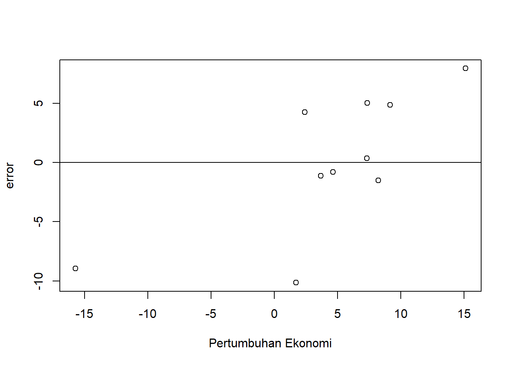

library(tidyverse)
library(readxl)Pengaruh Kontribusi Sektor Pertambangan dan Penggalian terhadap Pertumbuhan Ekonomi Provinsi Papua Tahun 2012-2021
Metode Penelitian Politeknik APP Jakarta

1 Pendahuluan
1.1 Latar belakang
Pertumbuhan ekonomi adalah peningkatan nilai dan jumlah barang atau jasa yang diproduksi dalam kurun waktu tertentu. Joko Untoro dalam buku Ekonomi Makro (2010) mendefinisikan pertumbuhan ekonomi sebagai perkembangan kegiatan dalam perekonomian yang menyebabkan barang dan jasa yang diproduksi dalam masyarakat bisa bertambah dan kemakmuran akan meningkat dalam jangka panjang. Pertumbuhan ekonomi merupakan indikator dari sebuah proses pembangunan ekonomi yang dilakukan baik di tingkat nasional maupun regional (daerah) (De Fretes, 2017). Pertumbuhan ekonomi tidak hanya mencakup peningkatan dalam produksi barang dan jasa, tetapi juga melibatkan peningkatan dalam tingkat pendapatan, perusahaan, lapangan pekerjaan, dan standar hidup masyarakat.
Provinsi Papua merupakan daerah yang memiliki wilayah paling luas dibandingkan dengan provinsi lain di Indonesia. Secara geografis, posisi wilayah Papua sangat strategis, yaitu berada di jalur pelayaran Asia Tenggara dan Pasifik. Provinsi Papua memiliki potensi ekonomi yang besar, terutama dalam sektor pertambangan yang melibatkan sumber daya alam seperti tambang emas, tembaga, dan gas alam. Salah satu indikator untuk mengetahui kondisi ekonomi suatu daerah dalam suatu periode tertentu ditunjukkan oleh Produk Domestik Regional Bruto (PDRB). Sektor pertambangan dan penggalian di Papua telah menjadi penyumbang signifikan terhadap PDRB regional. Pertumbuhan ekonomi yang berkelanjutan sangat bergantung pada sektor ini. Salah satu perusahaan pertambangan yang berkontribusi besar dalam mewujudkan pertumbuhan ekonomi pesat di Papua adalah PT Freeport Indonesia (PTFI).
1.2 Ruang lingkup
Penelitian ini membahas mengenai pengaruh kontribusi sektor pertambangan dan penggalian terhadap pertumbuhan ekonomi di Provinsi Papua. Dalam penelitian ini, penulis mengambil objek penelitian dari Badan Pusat Statistik (BPS) Provinsi Papua. Ruang lingkup penelitian ini melibatkan 2 variabel utama yakni kontribusi sektor pertambangan pada Produk Domestik Regional Bruto (PDRB) Provinsi Papua dan pertumbuhan ekonomi Provinsi Papua. Data yang digunakan merupakan data yang bersifat time series yaitu dalam kurun waktu 2012-2021 yang disajikan dalam bentuk persentase (%).
1.3 Rumusan masalah
- Apakah kontribusi sektor pertambangan dan penggalian berpengaruh terhadap pertumbuhan ekonomi Provinsi Papua?
- Bagaimana pengaruh kontribusi sektor pertambangan dan penggalian terhadap pertumbuhan ekonomi di Provinsi Papua?
1.4 Tujuan dan manfaat penelitian
Sesuai dengan rumusan masalah yang telah dipaparkan di atas, maka tujuan dilakukannya penelitian ini adalah untuk mengetahui pengaruh kontribusi sektor pertambangan dan penggalian terhadap pertumbuhan ekonomi di Provinsi Papua selama periode 2012-2021.
Adapun manfaat dari penelitian ini, diantaranya sebagai berikut :
Manfaat Teoritis
Hasil penelitian diharapkan dapat menambah wawasan yang dapat meningkatkan pengetahuan bagi pembaca mengenai dinamika ekonomi regional.
Manfaat Praktis
a. Bagi penulis
Penelitian ini diharapkan dapat meningkatkan pemahaman mengenai pengaruh sektor pertambangan dan penggalian terhadap pertumbuhan ekonomi di Provinsi Papua, dan mengembangkan keterampilan analisis serta metodologi penelitian.
b. Bagi instansi terkait
Penelitian ini diharapkan dapat berguna untuk meningkatkan kebijakan ekonomi dan pengelolaan sumber daya alam yang lebih efektif dan berkelanjutan di Provinsi Papua.
1.5 Package
Packages yang digunakan untuk mendukung regresi univariat dalam penelitian ini meliputi :
2 Studi pustaka
Sektor Pertambangan dan Penggalian Provinsi Papua
Provinsi Papua memang kaya akan potensi sumber daya tambang, termasuk minyak dan gas bumi, emas, tembaga, batubara, nikel, pasir besi, dan sejenisnya. Potensi emas dan tembaga melibatkan sebagian besar wilayah Papua. Sebagian dari potensi ini telah dieksploitasi oleh PT Freeport Indonesia di wilayah Grasberg Tembagapura, Mimika. Sektor pertambangan dan penggalian memiliki peran penting sebagai penopang perekonomian Provinsi Papua, dan menjadi salah satu kontributor utama terhadap Produk Domestik Regional Bruto (PDRB) di wilayah tersebut.
Pertumbuhan Ekonomi
Pertumbuhan ekonomi mengacu pada peningkatan nilai ekonomi suatu negara atau wilayah dalam suatu periode waktu tertentu. Pertumbuhan ekonomi suatu wilayah pada umumnya diukur dengan persentase perubahan dari satu periode ke periode berikutnya dalam indikator yang disebut Produk Domestik Regional Bruto (PDRB). Menurut Sadono Sukirno, PDRB adalah nilai tambah yang dihasilkan oleh berbagai sektor ekonomi dalam suatu wilayah tertentu. Sadono Sukirno juga mengatakan bahwa PDRB dapat digunakan untuk mengukur produktivitas setiap sektor ekonomi.
3 Metode penelitian
3.1 Data
Berikut merupakan data yang digunakan sebagai objek penelitian. Data yang digunakan meliputi data kontribusi sektor pertambangan dan penggalian pada PDRB dan data pertumbuhan ekonomi Provinsi Papua yang disajikan dalam bentuk persentase (%).
| Tahun | Kontribusi (%) Sektor Pertambangan dan Penggalian pada PDRB (X) | Pertumbuhan Ekonomi (Y) |
|---|---|---|
| 2012 | 41.32 | 1.72 |
| 2013 | 39.28 | 8.21 |
| 2014 | 34.56 | 3.65 |
| 2015 | 32.22 | 7.35 |
| 2016 | 34.08 | 9.14 |
| 2017 | 35.19 | 4.64 |
| 2018 | 36.64 | 7.32 |
| 2019 | 23.56 | -15.74 |
| 2020 | 28.23 | 2.39 |
| 2021 | 36.84 | 15.11 |
Penelitian ini menggunakan data yang bersifat time series yaitu dalam kurun waktu 2012-2021 yang diperoleh dari Badan Pusat Statistik (BPS) Provinsi Papua.
setwd('D:/Metopel_2023/Desti UAS metopel')
library(readxl)
dat<-read_excel('Kontribusi pada PDRB dan Pertumbuhan Ekonomi Papua.xlsx')
reg1<-lm(Y~X,data=dat)
dat$u<-resid(reg1)
plot(dat$X,dat$u,xlab="Kontribusi Sektor Pertambangan dan Penggalian pada PDRB",ylab="error")
abline(h=0)
Plot pengaruh error terhadap Kontribusi Sektor Pertambangan dan Penggalian pada PDRB
library(readxl)
dat$u<-resid(reg1)
plot(dat$Y,dat$u,xlab="Pertumbuhan Ekonomi",ylab="error")
abline(h=0)
Plot pengaruh error terhadap Pertumbuhan Ekonomi
3.2 Metode analisis
Metode yang dipilih adalah regresi univariat atau Ordinary Least Square (OLS) dengan 1 variabel independen yaitu kontribusi sektor pertambangan dan penggalian pada PDRB dan 1 variabel dependen yaitu pertumbuhan ekonomi. Tujuan dari penelitian ini adalah untuk mengidentifiksi hubungan antara kontribusi sektor pertambangan dan penggalian (X) dengan pertumbuhan ekonomi (Y).
\[ y=\beta_0 + \beta_1 x_t+\mu_t \]
Di mana \(y_t\) adalah Y dan \(x_t\) adalah X. Di mana Y adalah pertumbuhan ekonomi Provinsi Papua, dan X adalah kontribusi sektor pertambangan dan penggalian pada PDRB Provinsi Papua.
4 Pembahasan
4.1 Pembahasan masalah
| Variable | Coefficient | Std.Error | t-value | Prob(.) |
|---|---|---|---|---|
| Intercept | -31.5273 | 13.9640 | -2.258 | 0.0539 |
| X | 1.0501 | 0.4042 | 2.598 | 0.0317 |
| R squared | 0.4576 | |||
| Adjusted R-Squared | 0.3898 | |||
| F-Statistic | 6.749 | |||
| Prob (F-Statistic) | 0.03172 |
Hasil regresi yang diperoleh dimasukkan ke dalam persamaan rumus, sehingga rumusnya menjadi :
\[ Y = (-31.5273) + 1.0501X \]
Kontribusi sektor pertambangan dan penggalian berpengaruh secara positif pada pertumbuhan ekonomi Provinsi Papua, dilihat dari variabel X yang positif. Jika diasumsikan setiap kenaikan kontribusi sektor pertambangan dan penggalian pada PDRB sebesar 1%, maka pertumbuhan ekonomi akan meningkat sebesar 1.0501%. Tetapi jika kontribusi sektor pertambangan dan penggalian pada PDRB = 0, maka pertumbuhan ekonomi akan menurun sebesar 31.5273%.
Nilai Adjusted R-Squared 0.3989 menunjukkan bahwa sebesar 39.89% variabel dependen dapat dijelaskan oleh model regresi. Nilai F-Statistic yang tinggi yaitu sebesar 6.749 dan nilai p-value yang rendah yaitu sebesar 0.0317 menunjukkan bahwa model secara keseluruhan memiliki kecenderungan untuk signifikan. Nilai p-value yang rendah pada variabel X juga menunjukkan bahwa variabel tersebut memiliki pengaruh yang signifikan terhadap variabel Y. Maka dapat disimpulkan bahwa kontribusi sektor pertambangan dan penggalian berpengaruh secara signifikan terhadap pertumbuhan ekonomi di Provinsi Papua.
4.2 Analisis masalah
Hasil regresinya adalah
library(readxl)
dat<-read_excel('Kontribusi pada PDRB dan Pertumbuhan Ekonomi Papua.xlsx')
reg1<-lm(Y~X,data=dat)
summary(reg1)
Call:
lm(formula = Y ~ X, data = dat)
Residuals:
Min 1Q Median 3Q Max
-10.1444 -1.4129 -0.2084 4.7269 7.9502
Coefficients:
Estimate Std. Error t value Pr(>|t|)
(Intercept) -31.5273 13.9640 -2.258 0.0539 .
X 1.0501 0.4042 2.598 0.0317 *
---
Signif. codes: 0 '***' 0.001 '**' 0.01 '*' 0.05 '.' 0.1 ' ' 1
Residual standard error: 6.305 on 8 degrees of freedom
Multiple R-squared: 0.4576, Adjusted R-squared: 0.3898
F-statistic: 6.749 on 1 and 8 DF, p-value: 0.03172Jika setiap kenaikan kontribusi sektor pertambangan dan penggalian pada PDRB diasumsikan sebesar 1%, maka pertumbuhan ekonomi akan meningkat sebesar 1.0501%. Tetapi jika kontribusi sektor pertambangan dan penggalian pada PDRB = 0, maka pertumbuhan ekonomi akan menurun sebesar 31.5273%.
5 Kesimpulan
Berdasarkan hasil penelitian, dapat disimpulkan bahwa sektor pertambangan dan penggalian berpengaruh terhadap pertumbuhan ekonomi di Provinsi Papua. Hasil analisis menunjukkan bahwa setiap kenaikan kontribusi sektor pertambangan dan penggalian pada Produk Domestik Regional Bruto (PDRB) sebesar 1% memberikan dampak positif terhadap pertumbuhan ekonomi, karena berpotensi meningkatkan pertumbuhan ekonomi sebesar 1.0501%. Namun, jika kontribusi sektor tersebut pada PDRB mencapai nol, akan berdampak negatif terhadap pertumbuhan ekonomi, karena mengakibatkan penurunan sebesar 31.5273%. Dengan demikian, perencanaan dan pengelolaan sektor pertambangan dan penggalian perlu diperhatikan untuk mendukung pembangunan ekonomi yang berkelanjutan dan stabil di Provinsi Papua.
6 Saran
Untuk hasil penelitian yang lebih akurat, disarankan untuk menambahkan variabel yang relevan dengan variabel utama yang diteliti.
7 Referensi
De Fretes, P. N. (2017). ANALISIS SEKTOR UNGGULAN (LQ),STRUKTUR EKONOMI (SHIFT SHARE), DAN PROYEKSI PRODUK DOMESTIK REGIONAL BRUTO PROVINSI PAPUA 2018. Develop, 1(2). https://doi.org/10.25139/dev.v1i2.384
Media, K. C. (2022, September 11). Pertumbuhan Ekonomi: Pengertian, Ciri, dan Faktor yang Mempengaruhinya. KOMPAS.com. https://money.kompas.com/read/2022/01/08/080854626/pertumbuhan-ekonomi-pengertian-ciri-dan-faktor-yang-mempengaruhinya
Kompas.id. (2021, February 3). Provinsi Papua: Wilayah Kaya Sumber Daya Alam di Ujung Timur Indonesia. Kompas.id. https://www.kompas.id/baca/daerah/2021/02/03/provinsi-papua
Menurut.id. (n.d). Pengertian PDRB Menurut Sadono Sukirno. Menurut.id https://www.menurut.id/pengertian-pdrb-menurut-sadono-sukirno
Badan Pusat Statistik Provinsi Papua. (2016, November 30). Laporan Perekonomian Daerah Provinsi Papua Tahun 2015. Retrieved January 8, 2024, from https://papua.beta.bps.go.id/id/publication/2016/11/30/add2c74db1e0b7703ca6d8e4/laporan-perekonomian-daerah-provinsi-papua-tahun-2015.html
Badan Pusat Statistik Provinsi Papua. (2019, December 6). Laporan Perekonomian Daerah Provinsi Papua 2019. Retrieved January 8, 2024, from https://papua.beta.bps.go.id/id/publication/2019/12/06/4c9ea38b6d220b85c6ba1b9f/laporan-perekonomian-daerah-provinsi-papua-2019.html
Badan Pusat Statistik Provinsi Papua. (2022, December 20). Laporan Perekonomian Daerah Provinsi Papua 2022. Retrieved January 8, 2024, from https://papua.beta.bps.go.id/id/publication/2022/12/20/b1f9a7861f9ed943695abfca/laporan-perekonomian-daerah-provinsi-papua-2022.html